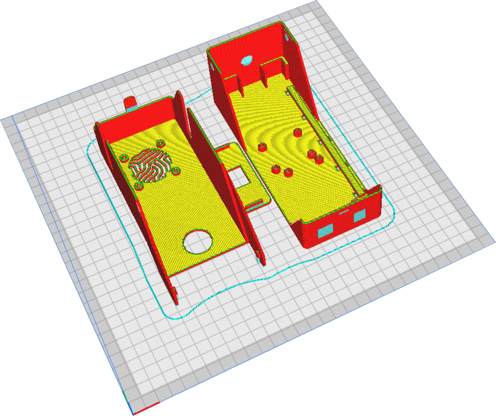

3D printing
The CAD parts for the flap case were created using FreeCAD and are available on the GitHub repository linked.
The case is composed of three parts: the base, a small lid, and the main lid. The components are made with PLA material using a FDM 3D printer.
Step 1: Slicing
Download the stl files and upload them into your slice :
We use Cura or Kiri:moto as slicer, with the following paremeters :
- Layer height : 0.2 mm;
- Infill : 20 %;
- Supports everywhere;
- Wall thickness : 1.2 mm.
This is what the parts look like in the slicer :

Step 2: Post-printing


Once printed, carefully remove all supports.